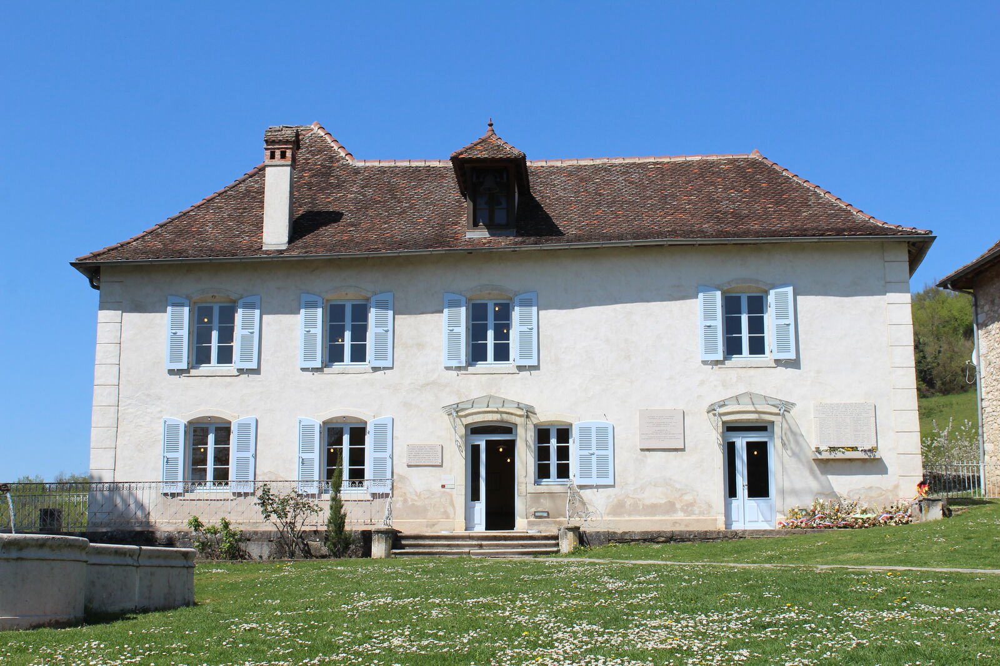
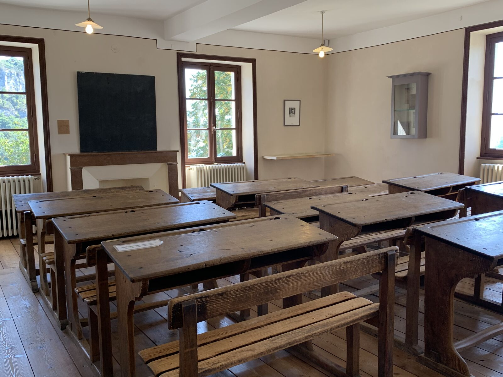
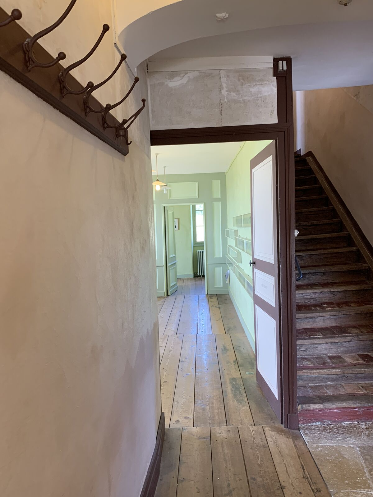

Home / Jewish Lyon guide / Maison d'Izieu
Maison d'Izieu
the memorial to the Jewish children arrested in 1944
The Maison d'Izieu, memorial to the 44 Jewish children and 7 adults arrested there on 6 April 1944 on the orders of Klaus Barbie, is about one hour from Lyon. The house is visited only with a mediator from the memorial, booked ahead. Our Izieu day trip starts at 990 € per group, quote on request.
- 70 route de Lambraz, 01300 Izieu
- About 1 hour from Lyon
- House visited with a mediator only
- Checked 7 October 2026

What happened at Izieu
In May 1943, Sabine and Miron Zlatin set up a home for Jewish children in a house at Izieu, in the Ain. Between 1943 and 1944 it took in more than a hundred children.
On the morning of 6 April 1944, the Gestapo of Lyon, under Klaus Barbie, arrested the 44 children and 7 educators who were in the house. Sabine Zlatin was away that day. The children were held at the Montluc prison in Lyon, then sent to Drancy.
- Deportation. Most of the group was sent to Auschwitz-Birkenau. Two teenagers and Miron Zlatin were deported to the Baltic countries and murdered at Reval, today Tallinn.
- Survivor. Léa Feldblum is the only adult who came back.
- 1987. At Barbie's trial in Lyon, Serge Klarsfeld produced the telex that reported the deportation of the 44 children. It became a key piece of evidence for his conviction for crimes against humanity.
- 1994. The memorial was inaugurated by President François Mitterrand, with Sabine Zlatin present.
The place today
The site has two parts: the historic house, and a museum building with a permanent exhibition and temporary exhibitions. The house holds the rooms of the colony and the children's letters and drawings. The museum places the story in the history of the war, of the rescue of Jewish children and of international justice.
The house can only be visited on a guided tour with a mediator from the memorial. The tour lasts about an hour. Your ticket also covers the exhibitions in the museum, which you visit at your own pace. The orchard behind the house is open for a picnic.





Hours, prices and contact 1
- Maison d'Izieu, mémorial des enfants juifs exterminés Monday to Friday 13:00 to 17:00 (10:00 to 18:00 in school holidays of zone A and on public holidays). Sunday 10:00 to 18:00, February to October. Saturday 10:00 to 18:00, April to August. Closed on 1 May and during the Christmas holidays. Last entry 1 hour 30 before closing. Museum and house ticket: 12 € full rate, 10 € reduced rate with proof, 5 € ages 8 to 25, free under 8. Museum only: 9 €, 7 €, 5 €.70 route de Lambraz, 01300 IzieuMap04 79 87 21 05
Source: memorializieu.eu, practical information and individual visitors pages, read on 7 October 2026. The 12 € rate is unchanged since our reading of 9 August 2026. Hours and prices change: check before you go.
On the map
1 place on the map. Izieu is in the Ain, east of Lyon. Tap the marker for the address and directions.
Getting there from Lyon
- By road. The memorial gives about 1 hour from Lyon. Two free car parks serve the site: the upper one for cars, the lower one for coaches.
- By train. The memorial lists no direct public transport. It gives travel times by private transport from the stations of La Tour-du-Pin and Culoz (30 to 40 minutes) and from the Lyon stations (50 minutes to 1 hour 15). Plan a car or a driver.
- Bridge closed. The main access bridge to the Maison d'Izieu is closed for works until November 2026. Follow the signed detour from exits 10 and 11 of the A43 motorway. Check the memorial's site before you leave.
Visiting with children and families
- Age. The memorial recommends a minimum age of 8. It runs a dedicated house visit for ages 8 to 12 on Wednesdays during zone A school holidays and in July and August.
- Language. Guided house visits run in French. In English, German or Italian they need a prior reservation and at least 6 people, including 2 adults and 2 children aged 8 or over. Spanish is available as an audioguide, not as a guided visit. Hebrew is not on the memorial's list.
- Shabbat. The memorial opens on Saturdays from April to August. We do not guide on Shabbat, so a visit with us falls on Sunday to Friday. Sunday opening runs from February to October.
- Food. Bring your own kosher food. Picnics are allowed in the orchard.
Our day trip to Izieu
Our Izieu day trip starts from Lyon and runs from 990 €, quote on request. Van and driver are arranged separately and billed separately. The memorial's entry is billed by the memorial.
Your guide tells the story on the road out and through the rest of the day. The house itself is visited with the memorial's mediator, and your guide goes through it with you. We book the visit with the memorial and tell you early if your group is below the minimum for an English-language tour.
The Izieu day and the CHRD or Montluc visits are separate bookings and never run on the same day.
Questions we get
Can we visit the house on our own?
No. The house can only be visited on a guided tour with a mediator, and the memorial recommends booking in advance because places are limited. The museum building can be visited on your own.
Is there a guided visit in English or in Hebrew?
English, yes, with a prior reservation and at least 6 people, including 2 adults and 2 children aged 8 or over. Hebrew is not offered. Spanish is available as an audioguide only.
How old should children be?
The memorial recommends a minimum age of 8. A dedicated house visit exists for ages 8 to 12 during some school holidays.
How long should we plan?
The guided house visit lasts about an hour, and the museum comes on top. The memorial publishes no total duration. With the drive, we plan a full day.
Can we get there without a car?
The memorial lists no direct public transport. It gives times by private transport from the nearest train stations. A van with a driver is the practical option, and we help you arrange it.
Does the bridge closure affect our visit?
The main access bridge is closed until November 2026. The site stays open and a signed detour leaves the A43 at exits 10 and 11. Allow extra time and check the memorial's site the week you go.
Keep reading
Sources: memorializieu.eu (practical information, individual visitors, groups); Mémorial de la Shoah, page on the Maison d'Izieu; fr.wikipedia.org. Compiled by Mishpacha Tours from these sources. Checked 7 October 2026.